Barrington's Bridge
Barrington's Bridge
Located approximately 14 km from Limerick City on the road from Limerick to Abington where it spans the Mulcair River this elegant bridge of one arch of cast iron from which the village derives its name was commissioned by Mattew Barrington in 1818. He sought the assistance of Limerick Iron Foundries which were by this time trading as James Doyle and Company.Doyle had established the foundry in 1806. Twelve years later 'the company was producing a wide range of iron products including hydraulic engines,stoves, etc. However, the most notable product of the foundry was the ireon bridge known a Barrington's Bridhe which was cast in 1818. Over 53 feet long, it was the first iron road bridge to be turned out by an Irish foundry. Barrington's Bridge is a' single span cast iron and imestone road bridge having nine curved cast iron pipes of 12-inch diameter supporting the roadway.The pipes were cast in sections and later bolted together using flanged joints. This bridge includes cast-iron balustrades with scrolled brackets, lettering, quatrefoil motifs and a pair of quare-profile limestone piers to east and west.The cast iron sides of the bridge are deorated neatly and bear the name Matthrew Barrington in the centre of the bridge and that of the make, J. Doyle.
 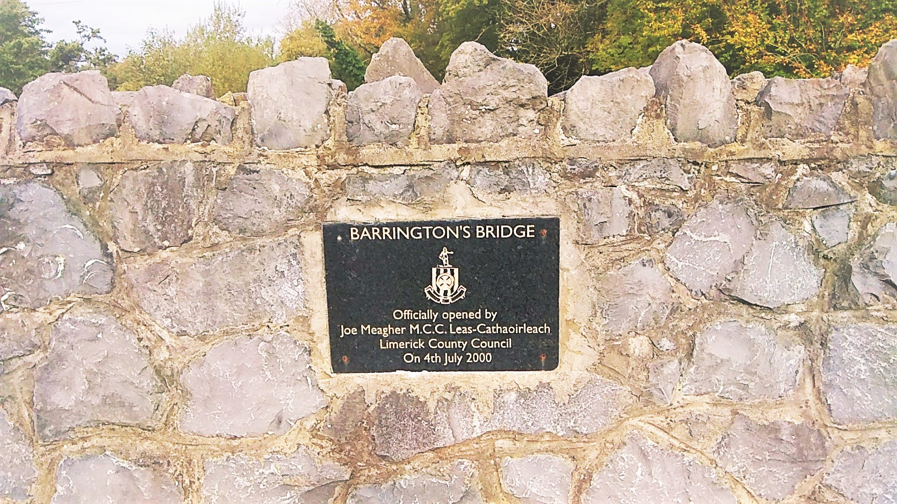
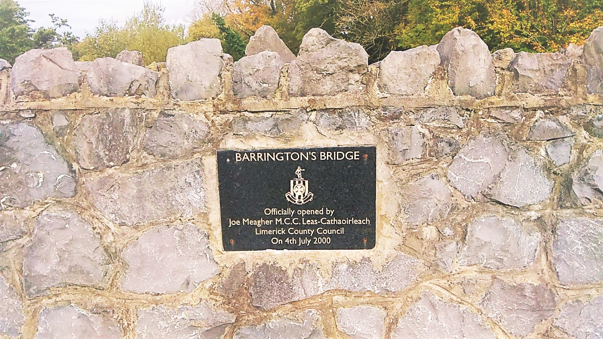
 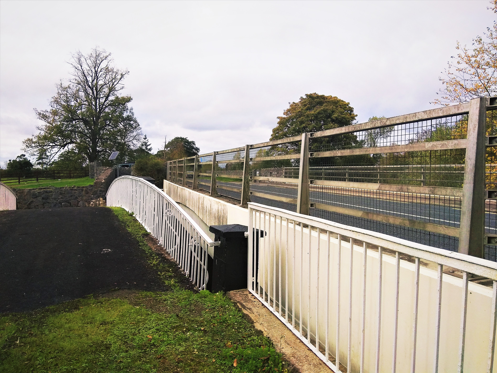
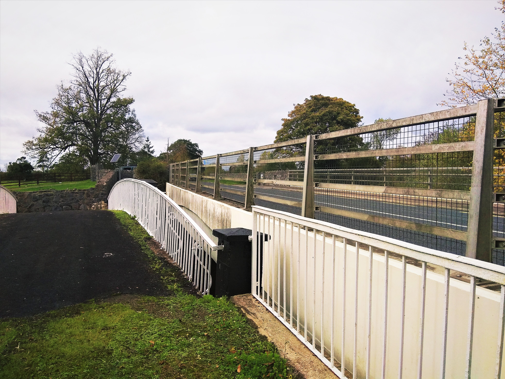
 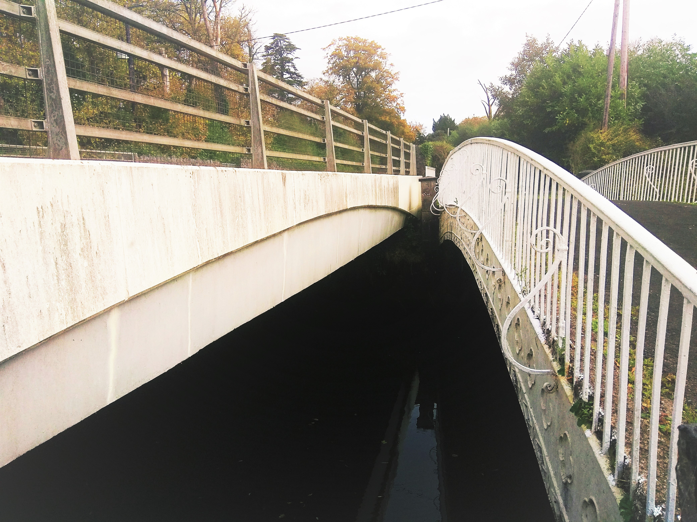
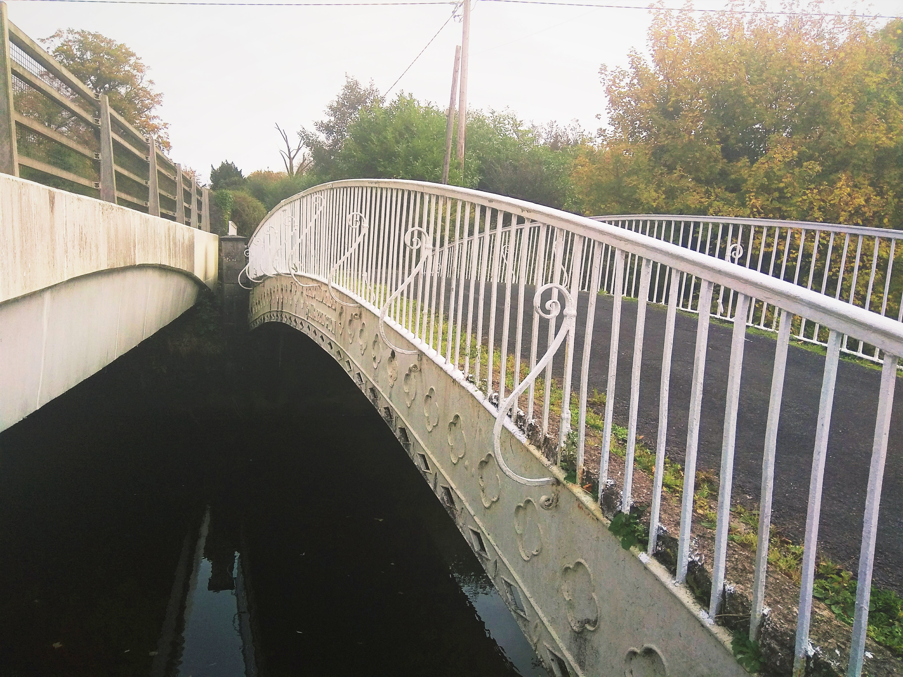
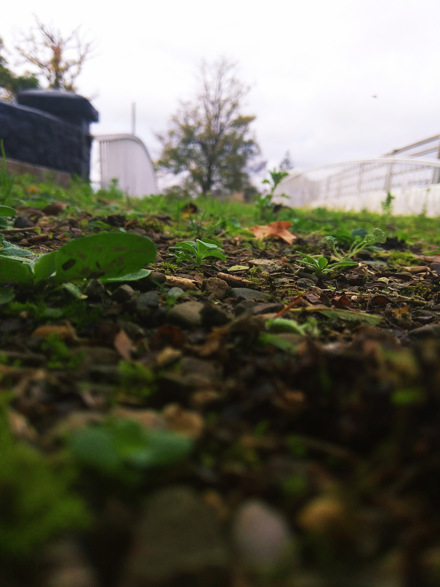
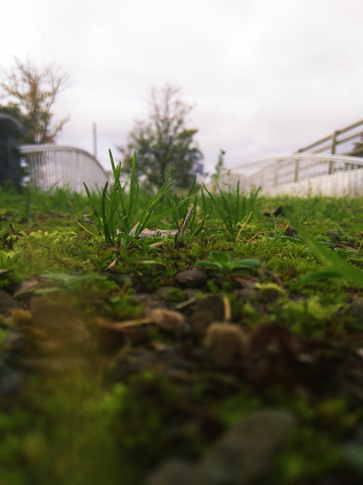
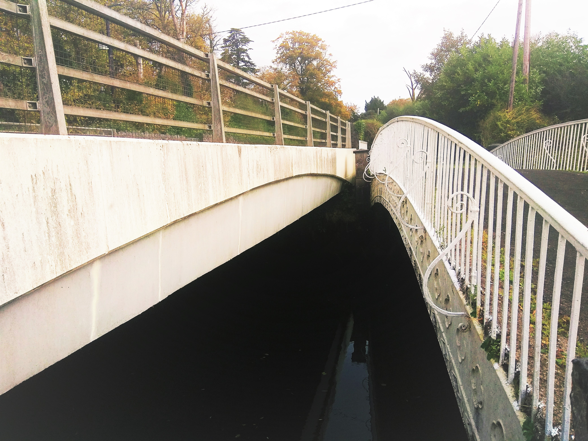
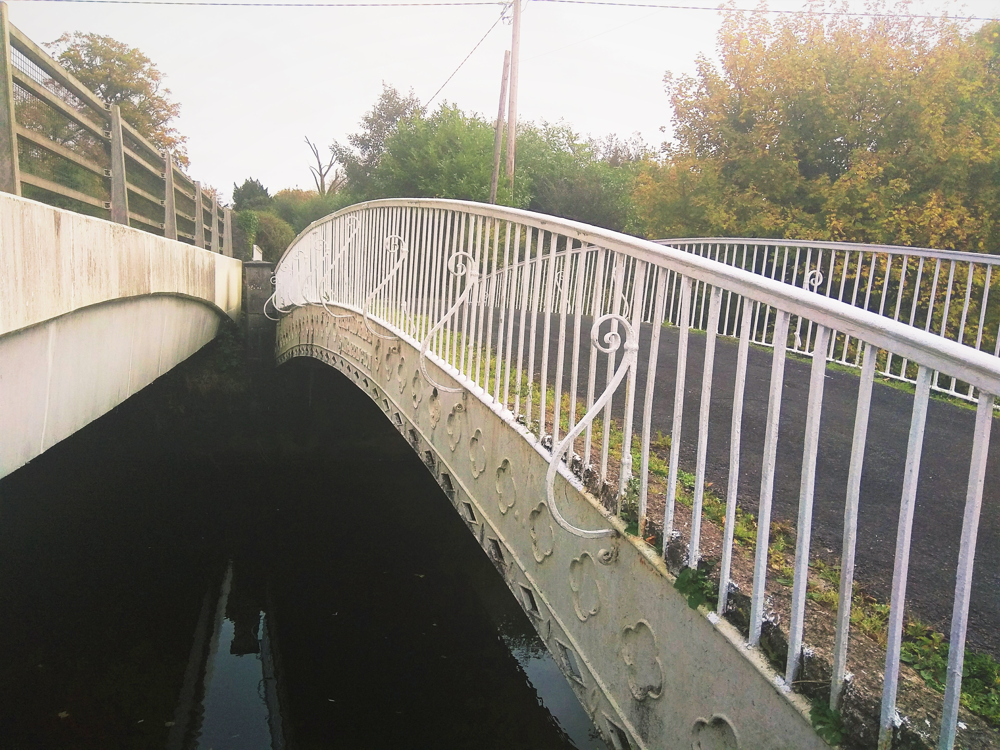
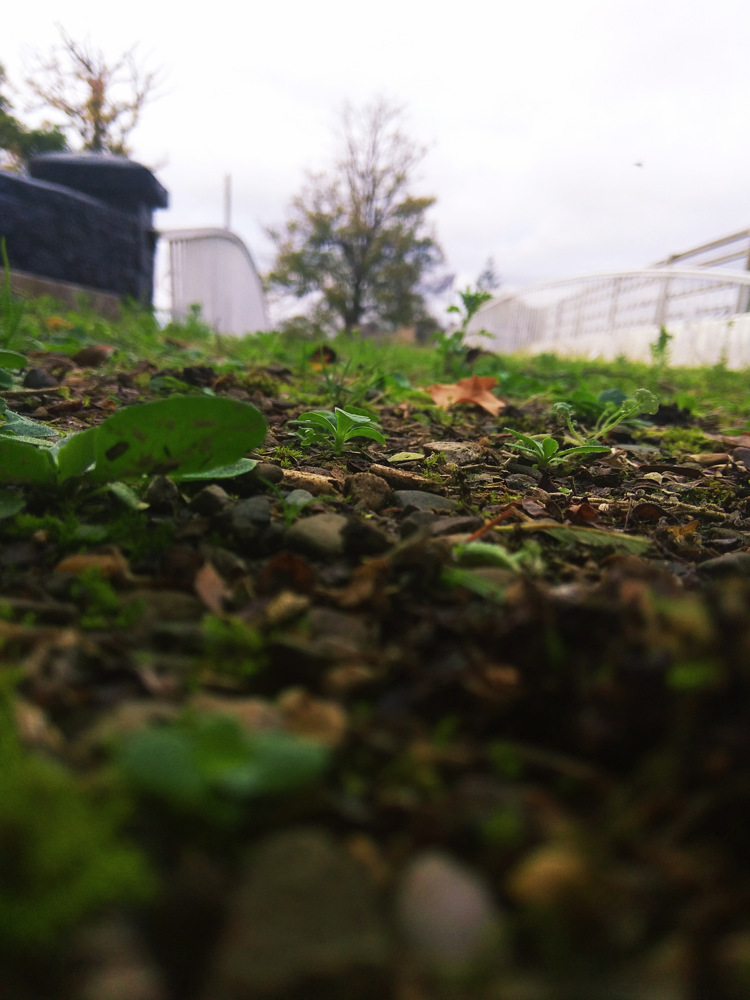
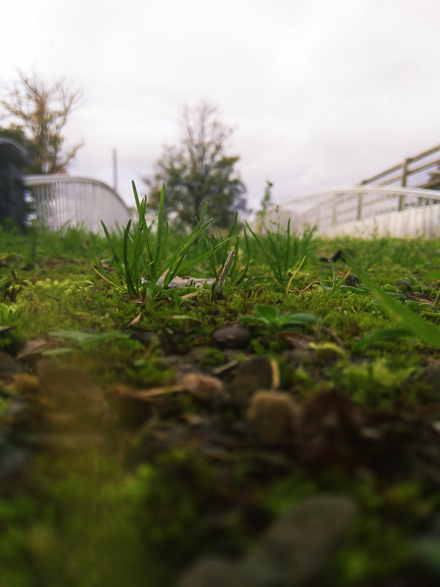